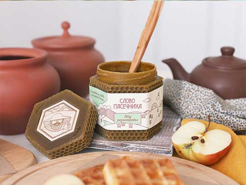

Придумали другое интересное применение баночки? Выкладывайте в свой инстаграм
с хештегом
#slovopasechnika
Лучшие идеи добавим на сайт и подарим ЯЩИК баночек!
Разработка специалистов-пчеловодов «Слово пасечника»
Сота
добрые
пасечники
пасечники
этичное
пчеловодство
пчеловодство
посмотреть мультик
Воск
Мёд
изготовлено
вручную
вручную
фасовка
без нагрева
без нагрева
100% упаковка из воска с мёдом
100% эко упаковка с мёдом
защищает
от солнечных лучей,
губительных для мёда
безопасна
для детей и животных
придаёт неповторимый
вкус и аромат
натуральный пчелиный воск
родная для мёда среда
невероятно приятная
на ощупь
защищает от солнечных лучей,
губительных для мёда
натуральный пчелиный
родная для мёда среда
безопасна для
детей и животных
придаёт неповторимый
вкус и аромат
невероятно приятная
на ощупь
Для чего нужна эко-упаковка?
Сохраняет природные свойства мёда
Основной показатель натуральности и зрелости мёда - диастазное число.*
*Чем выше этот показатель, тем лучше продукт.
Большинство мёда в магазине
Слово Пасечника
- • сладкий сироп со вкусом мёда
- • лечебные свойства;
- • косметический эффект;
- • натуральный и зрелый мёд;
- • мягкая защита от стресса.
Какие свойства мёда сохраняет эко-упаковка?
Первоначальный вкус мёда
не смешиваем различные сорта мёда
для выравнивания свойств и вкуса;
фасуем мёд вручную, без нагрева;
храним в родной для мёда среде.
Совет!
Не добавляйте мёд в нагретый чай, лучше ешьте «вприкуску». Мёд должен нести только пользу!
И поэтому мы решили, что вы должны знать о вреде веществ, которые выделяются в нагретом мёде свыше 40°С при промышленном производстве. Это метилфурфураль и другие вещества. Опасность в том, что большинство мёда на полках магазинов нагреты.
Как отличить нагретый мёд в магазине?Косметическое средство 6в1
омолаживающее кератолитическое действие, борьба с морщинами(anti-age терапия);
избавляет от чёрных точек и сужает поры;
эффективен при борьбе с акне в легкой стадии;
противовоспалительное действие;
лифтинг эффект;
способствует обновлению эпидермиса.
Важно!
Перед использованием обязательно проконсультируйтесь с врачом, так как мёд также является сильным аллергеном.
Рецепт питательной маски из меда для лица:
2 чайные ложки меда разотрите с 1 столовой ложкой творога. Добавьте еще 2 ст. ложки теплого молока. Все тщательно размешайте и наложите массу на лицо. По истечении 10-12-ти минут снимите ватным тампоном, смоченным в теплой воде. Не добавляйте мёд в нагретый чай, лучше ешьте «вприкуску». Мёд должен нести только пользу!
Получите косметические рецепты нашего дерматологаМёд как лекарство
мобилизирует все защитные функции организма
одно из лучших средств для лечения дыхательных путей;
возвращает жизненные силы;
Совет!
Помните, что натуральный мёд имеет к себе некоторые требования. Самое первое и важное, это то, что его нельзя нагревать свыше 40°C градусов, потому что он теряет большинство своих полезных составлящих. Следующее важное требование - употреблять в пищу для максимальной пользы организму нужно только натуральный мёд. Искусственный мёд не имеет чудодейственной силы.
Получить следующий советВосстанавливает нервные клетки и защищает от стрессов
оптимизирует эмоциональный фон;
мягко успокаивает и снимает усталость;
повышает уровень стрессоустойчиовости;
Личный совет, который применяет наша команда!
Давно ли вы высыпались ?
Попробуйте разводить 1 ст. ложку мёда в стакане тёплой воды и выпивать за 30-40 минут до отхода ко сну.
Откуда рецепт:
Есть свидетельства, что такой способ применялся славянами, китайцами, индийцами, римлянами, греками с древних времен.
Получите косметические рецепты нашего дерматолога
Восстановление печени
Мужской тонус
Суперфуд
Заменитель сахара
Восстановление печени
Мужской тонус
Суперфуд
Заменитель сахара
Применение баночки дома

Остались вопросы?
Задай их менеджеру
+7(812)407-11-43
Заказать обратный звонок
Изменим мир вместе!
Посмотрите 3-минутное видео о том,
зачем мы разработали и запустили этот проект.
Перейти к покупке
Расскажите нам про свои идеи замены пластика и стекла
idea@slovopasechnika.ru
Elena Kalinyak (Kiseleva)
Ураааааа !!!!! Так хотелось мне эту восхитительную баночку, и чудо случилось!
Ура-ура-ура !!! Спасибо огромное до небес
Надежда Королева
Господи! Вселенная слышит ! Ура! Спасибо вам ребята! Вы просто воплотили мечту-спасение
от боли за утопающие в пластике человечество!
Полина Дудникова
Удачи в процессе, успеха в результате!=)
Я вчера, наконец, добралась до баночки с мёдом. У вас очень, очень, оооочень вкусный мёд!!!
(а уж я в мёде разбираюсь, ем каждый день и много)))
И восковая эко-баночка волшебно пахнет. Спасибо
Регина Иващенко
Надумала я тут заболеть, а меня решили полечить) и подарили мёд.
А мёд оказался не простой, Лежит он в 100% банке восковой!
Баночка красивая, маленькая, милая,Очень ароматная и натуральная! Биоразлагаема, в быту
всегда полезная,И мёд в ней супер-вкусный! Спасибо Вам, друзья!
Придумали Вы баночку, которую так хочется держать в руках и согревать и мёд из неё есть.
Проект Ваш просто суперский, другого и не хочется,
Вселенной всей так нравится и плюсов уж не счесть!